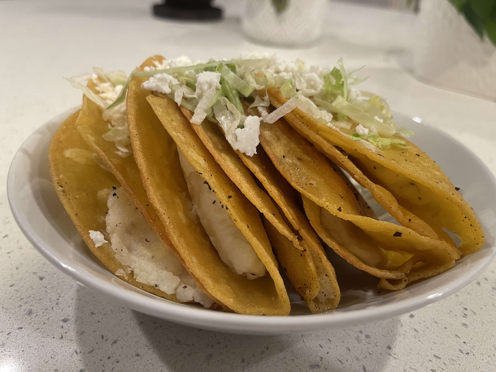

potato tacos!!!
i made some potato tacos to feel closer to home as its my moms favorite dish. 9.7/10 - very good, addicting.
basically like a fried taco but the filling is mashed potatoes, preparation is relatively easy and smells delicious.
ingredients
- russett potatoes
- corn tortillas
- canola oil
- lettuce, shredded
- salsa, queso fresco for topping
- seasonings to taste
steps
- cook potatoes in boiling water until soft and mashable
- mash potatoes, season, and set aside
- grab corn tortillas and put them over comal/pan for 1 second each side to prevent breakage when folding
- prefill all tortillas with potato filling and fold longways
- slowly submerge prefilled tacos and fry on both sides until golden and crispy
- add toppings such as shredded lettuce, queso freso, salsa, and enjoy!